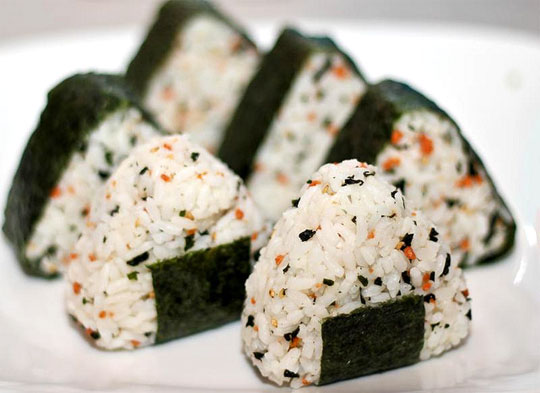
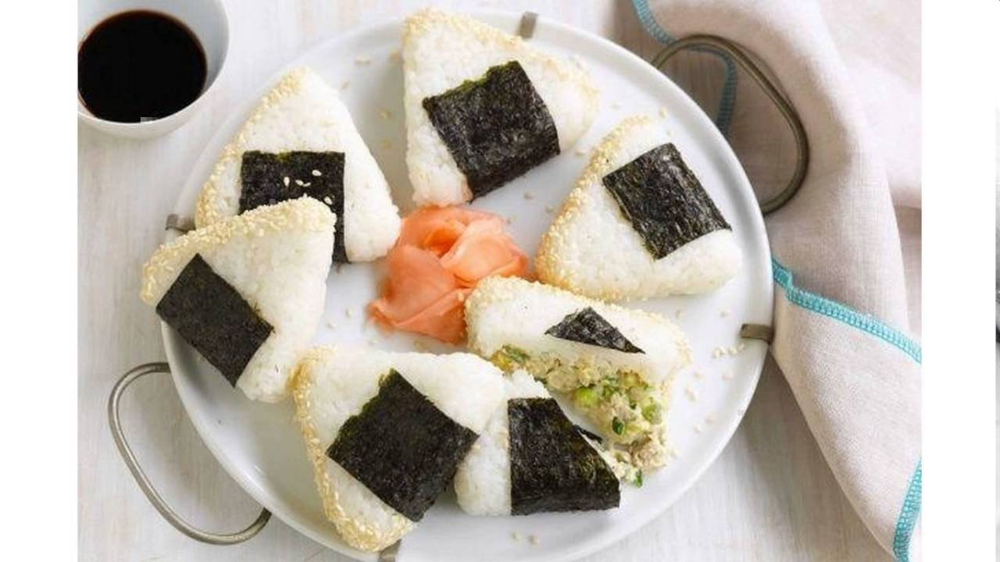

O-nigiri
Taktiež známe aj ako o-musubi, nigirimeshi alebo ryžové gule.
Je to japonské jedlo vyrobené z ryže vytvarovanej v podobe guličiek alebo trojhranou zabalených v nori.
Tradične sú plnené posoleným lososom alebo inou slanou či kyslou prísadou.
V Japonsku sú veľmi obľúbené a často aj plnené rôznymi ingredienciami.

História O-nigiri
O-nigiri sa na začiatku volali tonjiki a boli to malé ryžové semiačka tvarované do podoby guličky, aby sa dali zdvihnúť a nahromadiť na tanier aby ich neskôr ľudia zjedli. Neskôr sa používali ako rýchle jedlo, pretože nebolo náročné na výrobu a servírovanie. Boli to jednoduché osolené guličky ryže. Až neskôr sa k O-nigiri začala pridávať morská riasa Nori, aby sa človek nezašpinil, keď zdvíha ryžovú guličku.

Plnky
Soľ,bravčové mäso, chobotnica, ovocie alebo zelenina, ryba alebo krevety a mnoho iného